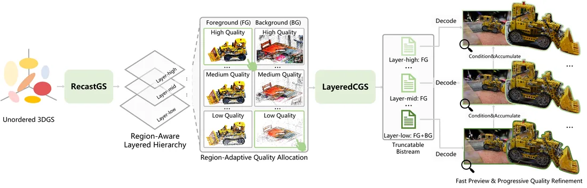
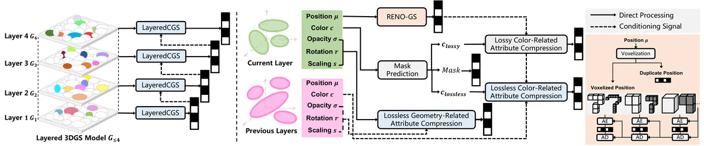
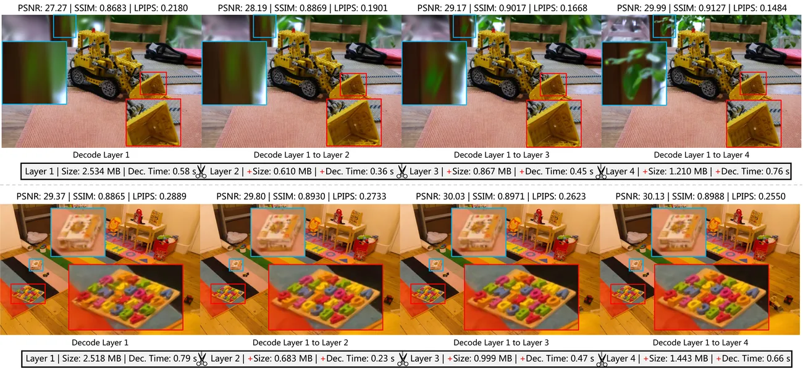
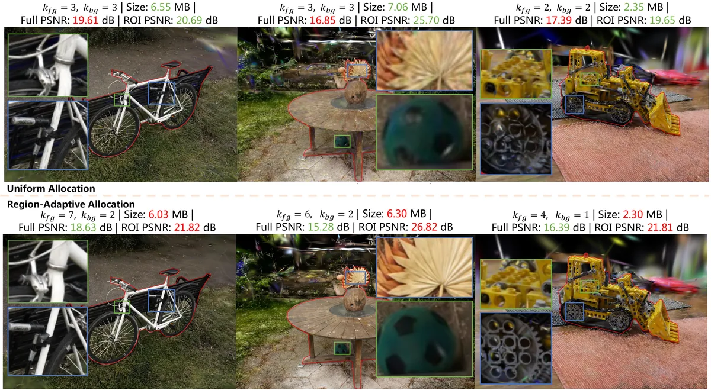
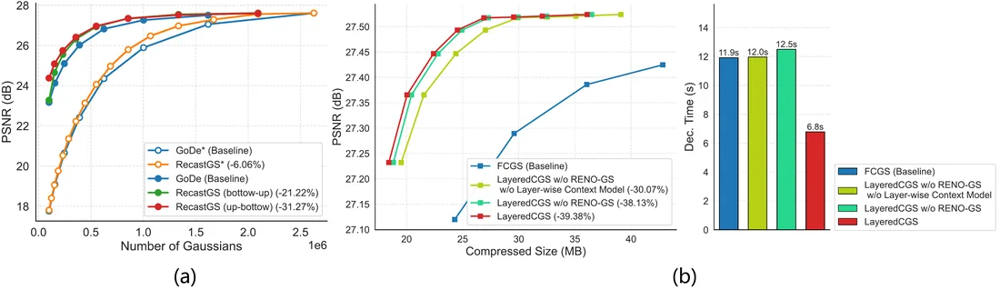

Average BD-BR reductions on PSNR / SSIM / LPIPS.
Abstract
Compress once, browse at multiple object-aware quality levels.
Existing 3DGS compression methods often treat a scene as a single holistic bitstream, which makes progressive decoding and region-specific quality control difficult. This work introduces RecastGS, a post-training method that converts unordered Gaussian primitives into a region-aware layered representation, and LayeredCGS, a feed-forward compressor that conditions each layer on previously decoded layers. Together, they support bitstream truncation, fast coarse preview, and ROI-aware compression without retraining for every user preference.
Method
Recast the representation, then compress it layer by layer.

RecastGS constructs a region-aware layered hierarchy through overcomplete layer search, progressive distillation, and prompt-driven object extraction.

LayeredCGS compresses Gaussian primitives layer by layer. Previously decoded layers provide context for later layers, reducing inter-layer redundancy while keeping the bitstream progressively decodable.
Results
Stronger compression, fast preview, and object-level scalability.
Average BD-BR reductions on PSNR / SSIM / LPIPS.
ROI PSNR gain on the kitchen scene at comparable bitrate.



Poster
ECCV 2026 poster overview.

Citation
BibTeX
@inproceedings{xue2026objectscalable3dgs,
title = {3D Gaussian Splatting Compression with Object Scalability},
author = {Xue, Ruixiang and Chen, Tong and Ma, Zhan},
booktitle = {Computer Vision -- ECCV 2026},
year = {2026}
}